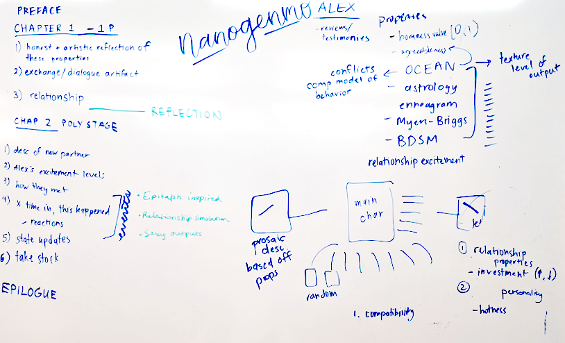
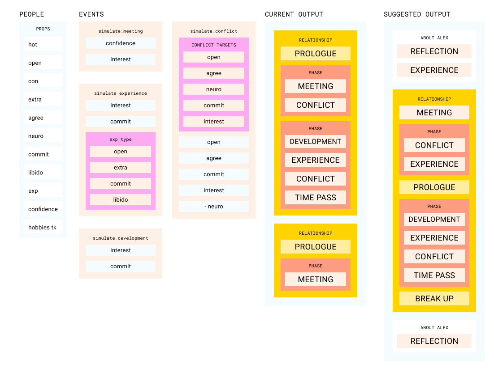

A.L.E.X. is a computationally-generated relationship simulator, focused on narrating the many romantic exploits of our protagonist Alex. A.L.E.X was originally developed for NaNoGenMo 2020 for Computational Approaches to Narrative.
By approaching people and relationships computationally we were able to encode our own assumptions and ask if they reflected reality. What damages relationships? What factors into initial attraction? What makes a person stay with someone who’s not interested in them?
The project was developed over the course of 6 weeks. We developed asynchronously over github and held three co-working and whiteboard sessions where we developed key system interactions.
The first iteration of the system had simple text outputs with the numerical values of the various properties that were being tested. You can see an example of this initial output here. We began to feel more confident about the logic behind each event in the relationships, but we weren't using all of the systems that we implimented. We created a system diagram and an MVP diagram.
In order to scope our expectations for the following weeks, we also wrote a sample output story. We tried to identify where our current system could produce more interesting narration, and outlined the reflection chapters where Alex changed over time.
We also shifted our grammar to tracery during the last leg of the projects. This allowed us to easily rank narrative outputs to the couples properties. We also implemented a hobby system that gives each individual 1-3 hobbies, and they’re able to go on dates associated with their hobbies. This added an extra level of interest and specificity to each relationship with relatively low lift.
Unsurprisingly, our simulation could not encode the complexities of human connection and falls short of convincing realism. We were still pleased by the tension produced by the narrative—Alex might text someone constantly after meeting but never go on a second date, and though the dialogue is obviously generated, a situation might feel familiar.
This is a meeting
After several minutes, Alex began to gaze quietly at Margaret. Margaret returned a flirtatious glance.
Soon, they got to talking and found themselves engaged in animated conversation. Margaret left with Alex's phone number.
DEBUG:root:Meeting began, Alex has confidence 0.6958503930221936 and interest level 0.4436604695582654
DEBUG:root:Meeting succeeded! Alex initiates contact and Margaret is receptive
This is an event
In the mood for adventure, Margaret proposed that they go to the beauty store together. 'Oh, okay,' Alex replied.
The next evening, Alex sent Margaret a text message.
*alex (2010-12-04)*: Yo! I had a great time. Let's do it again sometime
*margaret (2010-12-04)*: im kinda busy rn but ill text u
DEBUG:root:BEGIN EXPERIENCE event DEBUG:root:Margaret initiates open experience with value 0.91455705949665 DEBUG:root:Alex takes open-damage = 0.5 DEBUG:root:relationship health is 1.0651980237062304
DEBUG:root:BEGIN EXPERIENCE event DEBUG:root:EXPERIENCE failed - not sufficient interest DEBUG:root:relationship health is 1.5642364687368029